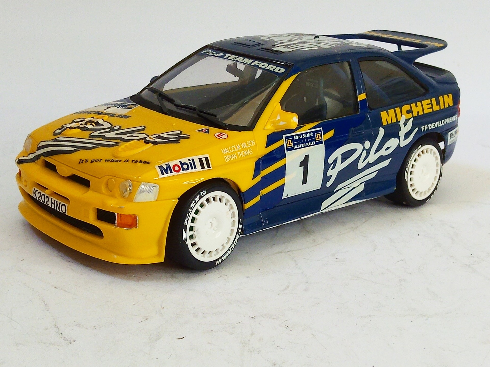
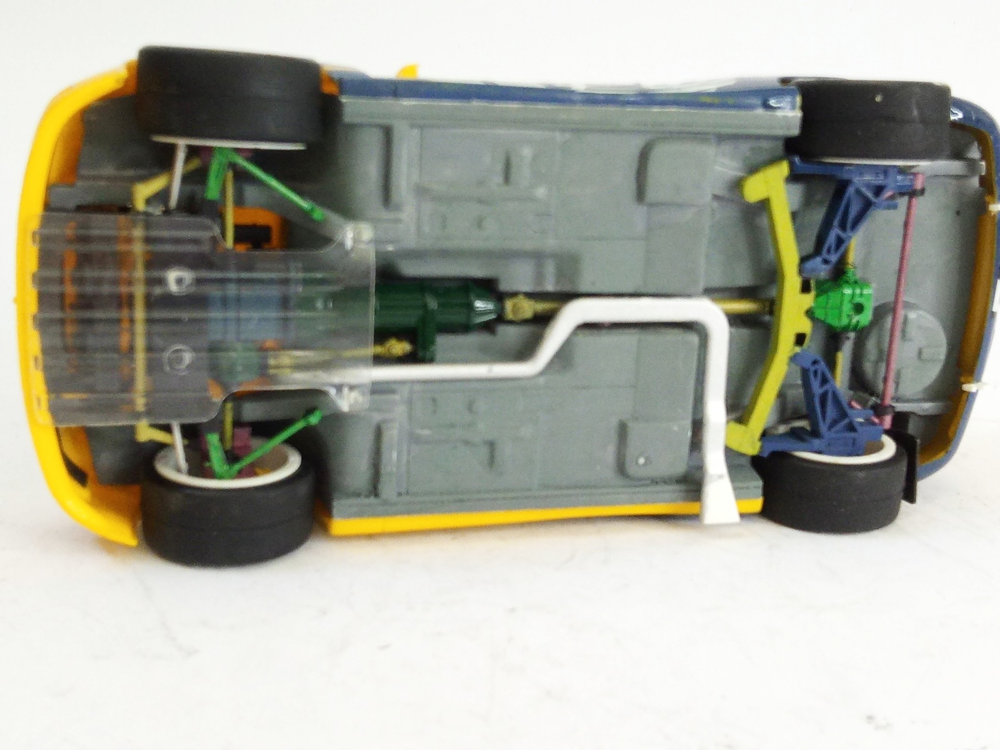
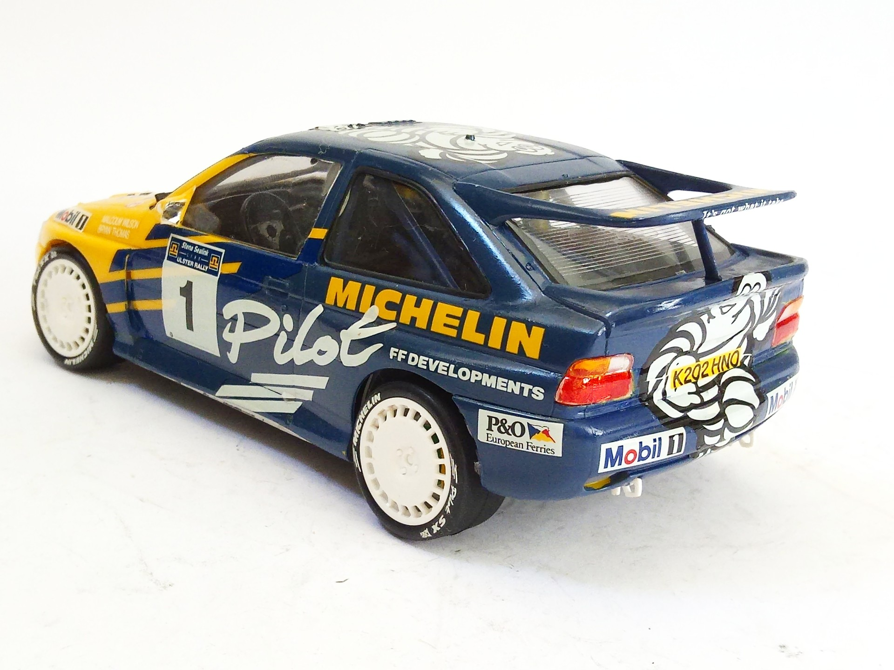

Auto e veicoli stradali · scale model archive
Ford Escort RS Cosworth Michelin Pilot
Ford Escort RS Cosworth Michelin Pilot — Kit: Tamiya, Scale: 1/24. Michelin Pilot Team Ford 1 (Malcolm Wilson - Bryan Thomas) 1994 Stena Sealink Ulster…

Photo gallery


English description
Michelin Pilot Team Ford 1 (Malcolm Wilson - Bryan Thomas) 1994 Stena Sealink Ulster Rally (Result: 1)
#1/24 #Tamiya
Descrizione italiana
Michelin Pilota Team Ford 1 (Malcolm Wilson - Bryan Thomas) 1994 Stena Sealink Ulster Rally (Result: 1).